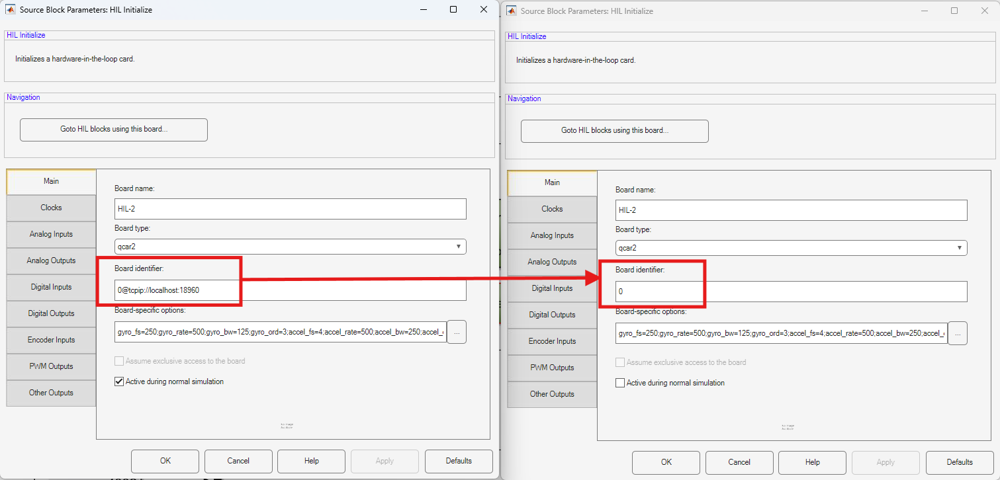
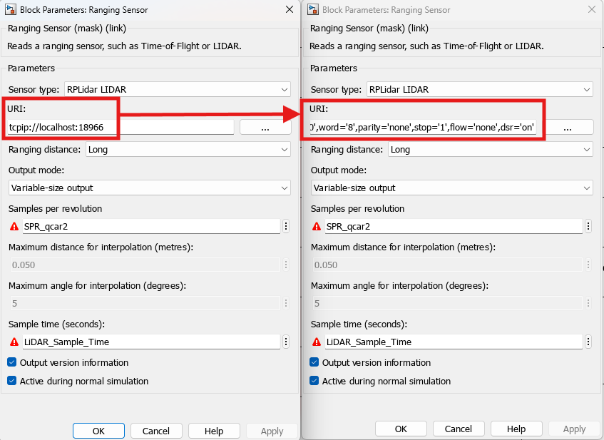
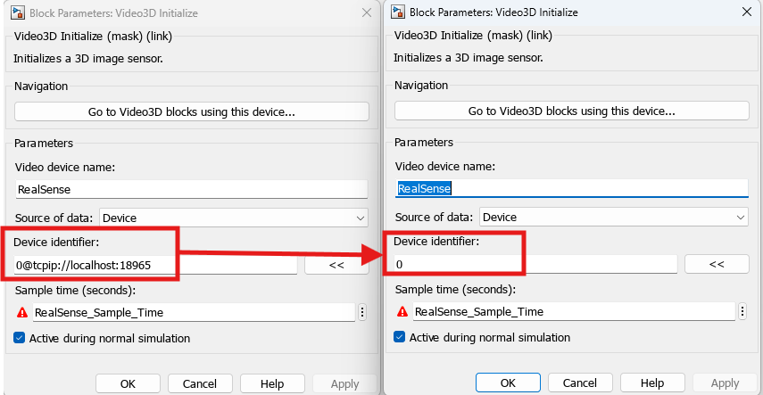
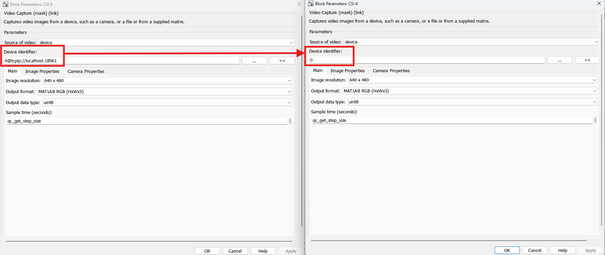
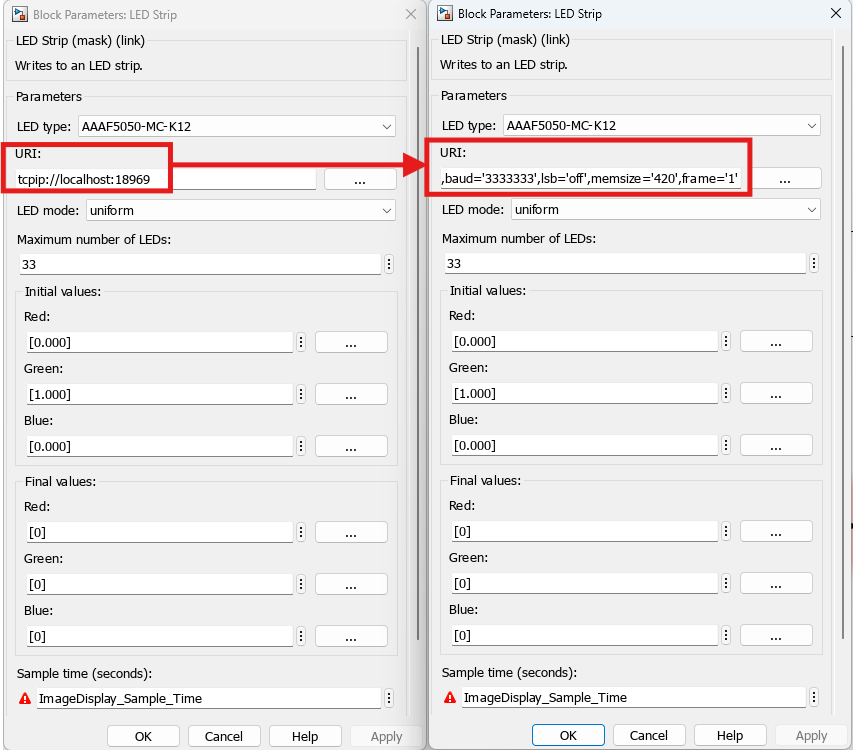
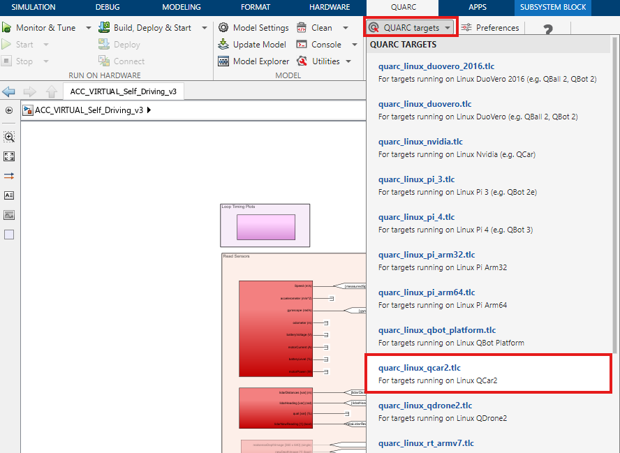
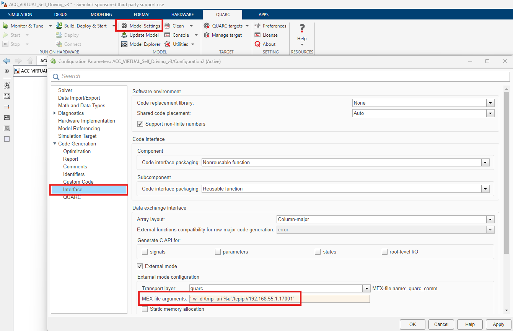

Virtual MATLAB Software Setup 🪧
Please go through the following steps to set up a computer to use the QCar with MATLAB in Quanser Interactive Labs.
Description
This document will cover the following:
- Background Context
- I/O Conversion Guide
- Quick Conversion Table
- HIL Initialize
- Ranging Sensor
- Video3D Initialize
- Video Capture
- LED Strip
- Switching the QUARC Target
Background Context
If you have followed the Virtual MATLAB Software Setup Guide, then the self-driving stack that you are developing on is configured to access virtual hardware. This is done using a special Device Identifier or URI in the HIL Initialize, Ranging Sensor, Video3D Initialize, LED Strip, and Video Capture. The Device Identifier or the URI contains a TCP port that communicates with QLabs to get the simulated sensor's data.
When converting your Simulink model from virtual to physical, you will need to change these Device Identifiers and URIs to point to the hardware instead of the virtual sensors.
You will also need to switch the target of the generated code from your Windows machine to the QCar 2, which is an Nvidia AGX Orin target. This will be addressed below.
I/O Conversion Guide
Below contains a list of the blocks that will need to be changed and what to change within the block settings.
Quick Conversion Table
This table contains the parameters you need to change, but the subsequent subsections contain screenshots.
| Simulink Block | Parameter Name | Virtual Setting | Physical Setting |
|---|---|---|---|
| HIL Initialize | Board identifier | 0@tcpip://localhost:18960 | 0 |
| Ranging Sensor | URI | tcpip://localhost:18966 | serial-cpu://localhost:1?baud='256000',word='8',parity='none',stop='1',flow='none',dsr='on' |
| Video3D Initialize | Device identifier | 0@tcpip://localhost:18965 | 0 |
| Video Capture (Right CSI) | Device identifier | 0@tcpip://localhost:18961 | 0 |
| Video Capture (Rear CSI) | Device identifier | 1@tcpip://localhost:18962 | 1 |
| Video Capture (Front CSI) | Device identifier | 2@tcpip://localhost:18963 | 2 |
| Video Capture (Left CSI) | Device identifier | 3@tcpip://localhost:18964 | 3 |
| LED Strip | URI | tcpip://localhost:18969 | spi://localhost:1?word='8',baud='3333333',lsb='off',memsize='420',frame='1' |
HIL Initialize
Change Board identifier from 0@tcpip://localhost:18960 to 0:

Ranging Sensor
Change URI from tcpip://localhost:18966 to serial-cpu://localhost:1?baud='256000',word='8',parity='none',stop='1',flow='none',dsr='on'

Video3D Initialize
Change Device identifier from 0@tcpip://localhost:18965 to 0:

Video Capture
The following are the conversions needed for each CSI Camera:
- Change
0@tcpip://localhost:18961to0(Right) - Change
1@tcpip://localhost:18962to1(Rear) - Change
2@tcpip://localhost:18963to2(Front) - Change
3@tcpip://localhost:18964to3(Left)

LED Strip
Change URI from tcpip://localhost:18969 to spi://localhost:1?word='8',baud='3333333',lsb='off',memsize='420',frame='1':

Switching the QUARC Target
Change the target from a Windows Target (used for QLabs) to the QCar 2 target. To do this select the QUARC Tab in Simulink, then the QUARC Targets drop down menu, then the quarc_linux_qcar2.tlc target:

Change the ip address to the ip address displayed on the QCar:

If you do not have an ip address on the LCD of the QCar, please refer to the User Manual for Connectivity.